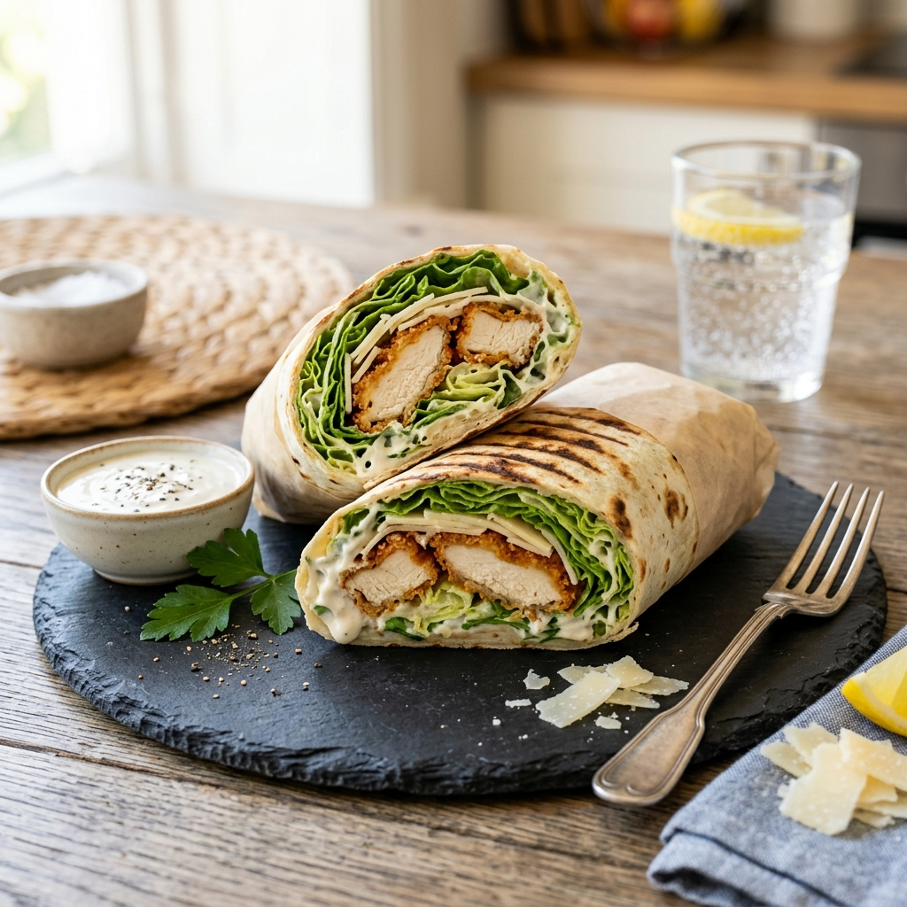

Description
Everything you love about a Caesar salad, wrapped up and ready to go. Crispy grilled chicken, crunchy romaine, shaved Parmesan, and creamy Caesar dressing in a toasted flour tortilla.
Ingredients
- 2 boneless chicken breasts
- 1 tsp garlic powder
- 1 tsp smoked paprika
- Salt and pepper
- 1 tbsp olive oil
- 2 large flour tortillas
- 3 cups romaine lettuce, chopped
- 1/4 cup shaved Parmesan
- 1/2 cup croutons, lightly crushed
- 4 tbsp Caesar dressing
- 1 lemon, for squeezing
Instructions
- Season chicken with garlic powder, smoked paprika, salt, and pepper.
- Heat olive oil in a skillet over medium-high. Cook chicken for 6–7 minutes per side until golden and cooked through. Rest for 5 minutes, then slice thinly.
- Warm tortillas in a dry pan for 30 seconds each side.
- Toss romaine with Caesar dressing and a squeeze of lemon.
- Layer the dressed lettuce, sliced chicken, Parmesan, and crushed croutons down the center of each tortilla.
- Fold in the sides, then roll tightly. Slice in half diagonally and serve immediately.